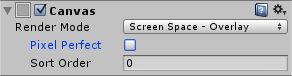
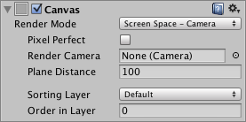
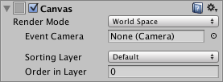
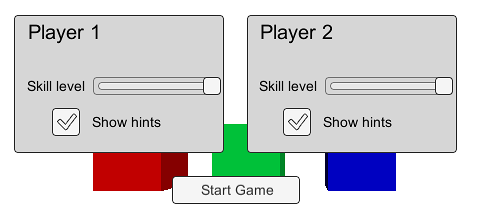
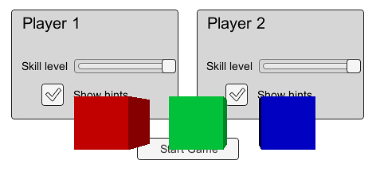
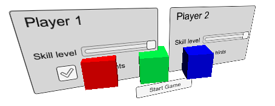

Canvas 组件表示 UI 布局和渲染所在的抽象空间。所有 UI 元素都必须位于带 Canvas 组件的 GameObject 的子级中。通过菜单 GameObject > Create UI 创建 UI 元素时，若场景内尚无 Canvas，会自动创建一个。



属性（Properties）
| 属性 | 功能说明 |
|---|---|
| 渲染模式（Render Mode） | 决定 UI 是渲染到屏幕上，还是作为三维空间中的对象显示。可选 Screen Space - Overlay、Screen Space - Camera 和 World Space，具体见下文。 |
| Pixel Perfect（仅 Screen Space 模式） | 是否不使用抗锯齿来渲染 UI，以保证像素精确对齐？ |
| Render Camera（仅 Screen Space - Camera 模式） | 负责渲染 UI 的摄像机，见下文。 |
| Plane Distance（仅 Screen Space - Camera 模式） | UI 平面放置在摄像机前方的距离。 |
| Event Camera（仅 World Space 模式） | 用于处理 UI 事件的摄像机。 |
| 接收事件（Receives Events） | 此 Canvas 是否处理 UI 事件？ |
详细说明（Details）
一个 Canvas 足以容纳全部 UI 元素，但场景中也可有多个 Canvas。为优化性能，也可以把一个 Canvas 作为另一个的子级，形成嵌套 Canvas；嵌套 Canvas 使用与父级相同的 Render Mode。
传统 UI 像平面图形一样直接绘制在屏幕上，不涉及摄像机观察三维空间的概念。Unity 支持这种 Screen Space 渲染，也支持把 UI 作为场景中的对象来渲染，由 Render Mode 决定：Screen Space - Overlay、Screen Space - Camera 或 World Space。
屏幕空间覆盖（Screen Space - Overlay）
该模式会缩放 Canvas 以适应屏幕，然后直接渲染，不依赖场景或摄像机；即使场景中没有摄像机，UI 也会显示。屏幕尺寸或分辨率改变时，UI 会自动缩放，并覆盖在摄像机画面等其他图形之上。

注意：Screen Space - Overlay Canvas 必须放在 Hierarchy 顶层，否则 UI 可能消失。这是内置限制，保持在顶层才能得到预期效果。
屏幕空间摄像机（Screen Space - Camera）
该模式将 Canvas 视为摄像机前方一定距离处的平面。UI 会始终缩放以匹配摄像机视锥体（Camera Frustum），所以屏幕上的尺寸不随该距离改变。屏幕尺寸、分辨率或视锥体改变时，UI 都会自动适配。比 UI 平面更靠近摄像机的三维对象会显示在 UI 前方，位于平面后方的对象则被遮挡。参考：camera frustum

世界空间（World Space）
该模式将 UI 渲染为场景中的平面对象。与 Screen Space - Camera 不同，平面无需朝向摄像机，可以任意旋转。Canvas 尺寸由 Rect Transform 设置，但屏幕上的显示大小取决于摄像机的角度和距离。其他场景对象可以位于 Canvas 后方、穿过它或出现在它前方。

提示（Hints）
- 有关 World Space Canvas 的设置，参阅 Creating a World Space UI。
- 有关 Canvas 和 UI 如何适应不同分辨率或宽高比，参阅 Designing UI for Multiple Resolutions 和 Canvas Scaler。